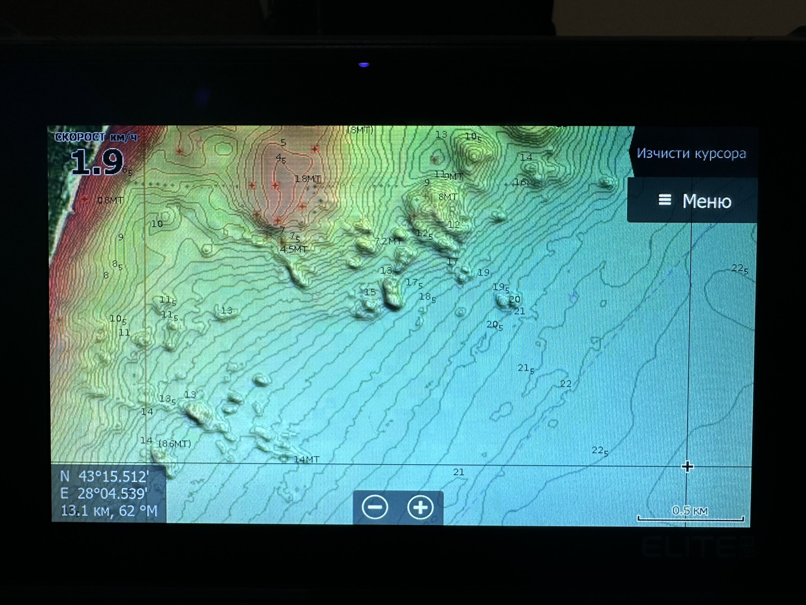
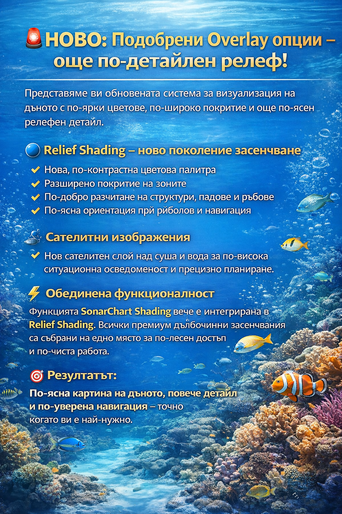

Картата на Барбата
за Черно и Средиземно море
Реалистичен дънен релеф, проверен в реални условия от рибари. Картата е създадена специално за морски вълци, които искат да знаят къде наистина се чупи дъното.
За Garmin вече няма нужда да се изпраща уред. Изпращам готова карта при същите условия.
Фокус върху реален дънен релеф и практични детайли за риболов, а не туристическа украса.
- • Детайлен дънен релеф в работни рибарски зони
- • Оптимизирана за Lowrance, Simrad, B&G и Garmin
- • Локален опит от човек, който реално лови там
Покритие
Основен фокус върху реално използвани рибарски и любителски зони.
Черно море
Детайлен дънен релеф по българското крайбрежие с акцент върху реални рибарски маршрути и работни точки.
- • Заливи, чупки и прагове
- • Зони с интересен релеф за хищници
- • Практически проверени структури от реален риболов
Средиземно море
Постепенно разширяване на покритието за различни райони на Средиземно море според интереса и заявките.
Ако имаш конкретен район, в който ловиш, пиши в контакт секцията, за да уточним възможностите.
Поддържани уреди
Картата се изработва индивидуално за всеки конкретен уред. Една карта е за един уред.
Lowrance, Simrad, B&G
Пълна съвместимост с основните модели, използвани от морски риболовци.
HDS, Elite, Hook серия (по запитване)
NSS, NSE и други модели
Zeus и други навигационни уреди
Garmin
За Garmin картата се записва директно на уреда. Това гарантира коректна и безпроблемна работа.
Примери от Картата на Барбата
Реални изгледи на дъното, така както го виждаш на уреда.




Видео, как изглежда картата в реални условия
Кратки видеа от реална работа на картата на вода.
Контакт и поръчка
Пиши какъв уред използваш.
- • Модел и марка на уреда